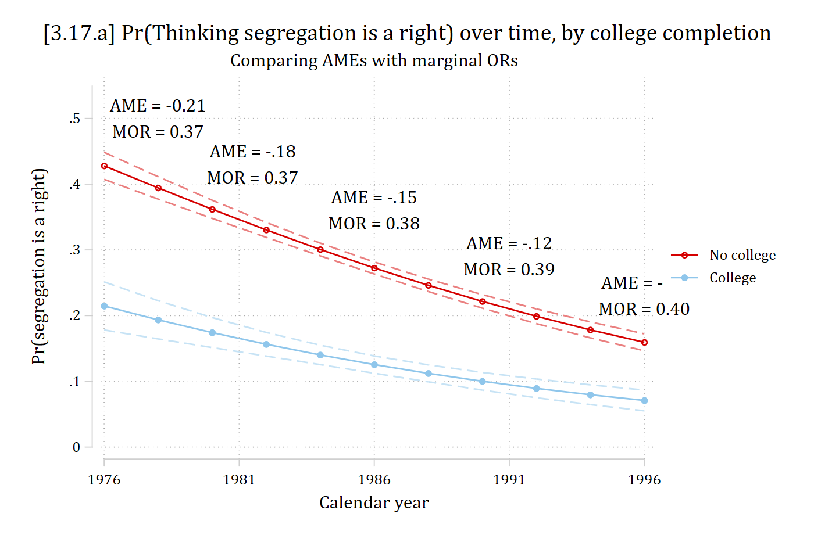

A new method of interpretation is the marginal odds ratio (Karlson and Jann 2023 ). The method:
Use the two predictions from an average marginal effect (i.e., predictions averaged over all observation)
Convert each prediction to odds
Divide the two odds obtain the odds ratio
A reminder, the AME is:
\[AME = \frac{1}{N}\sum_{i = 1}^{N}\left\{\eta(x_{k} = {end}_{i}, \mathbf{x}_{-k} = \mathbf{x}_{-k,i}) - \eta(x_{k} = {start}_{i}, \mathbf{x}_{-k} = \mathbf{x}_{-k,i})\right\}\]
A marginal odds ratio (MOR) is:
\[MOR = \frac{odds\left[\frac{1}{N}\sum_{i = 1}^{N}\eta(x_{k} = {end}_{i}, \mathbf{x}_{-k} = \mathbf{x}_{-k,i})\right]}{odds\left[\frac{1}{N}\sum_{i = 1}^{N}\eta(x_{k} = {start}_{i}, \mathbf{x}_{-k} = \mathbf{x}_{-k,i})\right]}\]
The example replicates Karlson and Jann (2023) Table 2 and Figure 1 (GSS); the MORs in the figure are from their Table 2:
use "https://tdmize.github.io/data/data/MORs-gss" , clear year year -- GSS YEAR FOR THIS RESPONDENT
-----------------------------------------------------------
| Freq. Percent Valid Cum.
--------------+--------------------------------------------
Valid 1976 | 840 6.86 6.86 6.86
1977 | 906 7.40 7.40 14.27
1980 | 950 7.76 7.76 22.03
1982 | 1128 9.22 9.22 31.24
1984 | 926 7.57 7.57 38.81
1985 | 999 8.16 8.16 46.97
1987 | 1157 9.45 9.45 56.43
1988 | 626 5.11 5.11 61.54
1989 | 664 5.43 5.43 66.97
1990 | 610 4.98 4.98 71.95
1991 | 657 5.37 5.37 77.32
1993 | 729 5.96 5.96 83.27
1994 | 1405 11.48 11.48 94.75
1996 | 642 5.25 5.25 100.00
Total | 12239 100.00 100.00
-----------------------------------------------------------model (fully interacted with year )logit racseg c.year##(i.col c.age i.race i.marital c.polviews i.female)Iteration 0: Log likelihood = -6860.6371
Iteration 1: Log likelihood = -6237.4239
Iteration 2: Log likelihood = -6200.5001
Iteration 3: Log likelihood = -6200.2352
Iteration 4: Log likelihood = -6200.2352
Logistic regression Number of obs = 12,239
LR chi2(21) = 1320.80
Prob > chi2 = 0.0000
Log likelihood = -6200.2352 Pseudo R2 = 0.0963
-------------------------------------------------------------------------------
racseg | Coefficient Std. err. z P>|z| [95% conf. interval]
--------------+----------------------------------------------------------------
year | -0.111 0.021 -5.353 0.000 -0.152 -0.071
1.col | -12.100 21.661 -0.559 0.576 -54.554 30.354
age | -1.430 0.616 -2.322 0.020 -2.637 -0.223
|
race |
black | -52.864 38.078 -1.388 0.165 -127.496 21.767
other | -2.587 56.352 -0.046 0.963 -113.034 107.860
|
marital |
widowed | -21.443 25.741 -0.833 0.405 -71.895 29.009
divorced | -8.235 23.185 -0.355 0.722 -53.677 37.206
separated | -36.811 42.728 -0.862 0.389 -120.556 46.934
never marr.. | -7.353 28.690 -0.256 0.798 -63.585 48.879
|
polviews | -0.515 5.754 -0.090 0.929 -11.793 10.762
1.female | 11.334 15.216 0.745 0.456 -18.488 41.157
|
col#c.year |
1 | 0.006 0.011 0.513 0.608 -0.016 0.027
|
c.year#c.age | 0.001 0.000 2.360 0.018 0.000 0.001
|
race#c.year |
black | 0.026 0.019 1.360 0.174 -0.011 0.064
other | 0.001 0.028 0.048 0.962 -0.054 0.057
|
marital#|
c.year |
widowed | 0.011 0.013 0.848 0.397 -0.014 0.036
divorced | 0.004 0.012 0.358 0.721 -0.019 0.027
separated | 0.019 0.022 0.865 0.387 -0.024 0.061
never marr.. | 0.004 0.014 0.260 0.795 -0.025 0.032
|
c.year#|
c.polviews | 0.000 0.003 0.103 0.918 -0.005 0.006
|
female#c.year |
1 | -0.006 0.008 -0.748 0.455 -0.021 0.009
|
_cons | 218.501 41.253 5.297 0.000 137.646 299.355
-------------------------------------------------------------------------------est store rsmoddydx (col) at (year =(1976(5)1996)) post Average marginal effects Number of obs = 12,239
Model VCE: OIM
Expression: Pr(racseg), predict()
dy/dx wrt: 1.col
1._at: year = 1976
2._at: year = 1981
3._at: year = 1986
4._at: year = 1991
5._at: year = 1996
------------------------------------------------------------------------------
| Delta-method
| dy/dx std. err. z P>|z| [95% conf. interval]
-------------+----------------------------------------------------------------
0.col | (base outcome)
-------------+----------------------------------------------------------------
1.col |
_at |
1 | -0.213 0.021 -9.970 0.000 -0.255 -0.171
2 | -0.181 0.012 -14.893 0.000 -0.205 -0.157
3 | -0.147 0.008 -17.910 0.000 -0.163 -0.131
4 | -0.115 0.009 -12.904 0.000 -0.133 -0.098
5 | -0.088 0.010 -8.547 0.000 -0.109 -0.068
------------------------------------------------------------------------------
Note: dy/dx for factor levels is the discrete change from the base level.in gap from 76 to 96lincom _b[1.col:5._at ] - _b[1.col:1bn._at ] ( 1) - [1.col]1bn._at + [1.col]5._at = 0
------------------------------------------------------------------------------
| Coefficient Std. err. z P>|z| [95% conf. interval]
-------------+----------------------------------------------------------------
(1) | 0.125 0.028 4.520 0.000 0.071 0.179
------------------------------------------------------------------------------in gap from 76 to 96nlcom ((_b[1.col:5._at ] - _b[1.col:1bn._at ])/_b[1.col:1bn._at ]) * 100 _nl_1: ((_b[1.col:5._at] - _b[1.col:1bn._at])/_b[1.col:1bn._at]) * 100
------------------------------------------------------------------------------
| Coefficient Std. err. z P>|z| [95% conf. interval]
-------------+----------------------------------------------------------------
_nl_1 | -58.509 7.673 -7.625 0.000 -73.548 -43.469
------------------------------------------------------------------------------
library (haven) # import Stata data and labels library (dplyr) # data manipulation library (ggplot2) # graphs library (marginaleffects) # predictions and marginal effects library (cleanplots) # graph scheme cleanplots_defaults ()<- read_dta ("https://tdmize.github.io/data/data/MORs-gss.dta" )table (gss$ year)
1976 1977 1980 1982 1984 1985 1987 1988 1989 1990 1991 1993 1994 1996
840 906 950 1128 926 999 1157 626 664 610 657 729 1405 642
# Treat binary/nominal variables as factors <- gss |> mutate (year = as.numeric (year), racseg = as.numeric (racseg),col = factor (col, labels = c ("No college" , "College" )), race = as_factor (race),marital = as_factor (marital), female = factor (female)) |> droplevels ()# Logit model (fully interacted with year) <- glm (racseg ~ year * (col + age + race + marital + polviews + female),family = binomial (link = "logit" ), data = gss)summary (rsmod)
Call:
glm(formula = racseg ~ year * (col + age + race + marital + polviews +
female), family = binomial(link = "logit"), data = gss)
Coefficients:
Estimate Std. Error z value Pr(>|z|)
(Intercept) 2.185e+02 4.125e+01 5.297 1.18e-07 ***
year -1.113e-01 2.078e-02 -5.353 8.66e-08 ***
colCollege -1.210e+01 2.166e+01 -0.559 0.5764
age -1.430e+00 6.159e-01 -2.322 0.0202 *
raceblack -5.286e+01 3.808e+01 -1.388 0.1650
raceother -2.587e+00 5.635e+01 -0.046 0.9634
maritalwidowed -2.144e+01 2.574e+01 -0.833 0.4048
maritaldivorced -8.235e+00 2.318e+01 -0.355 0.7224
maritalseparated -3.681e+01 4.273e+01 -0.862 0.3889
maritalnever married -7.353e+00 2.869e+01 -0.256 0.7977
polviews -5.155e-01 5.754e+00 -0.090 0.9286
female1 1.133e+01 1.522e+01 0.745 0.4563
year:colCollege 5.592e-03 1.091e-02 0.513 0.6083
year:age 7.324e-04 3.103e-04 2.360 0.0183 *
year:raceblack 2.607e-02 1.917e-02 1.360 0.1737
year:raceother 1.353e-03 2.835e-02 0.048 0.9619
year:maritalwidowed 1.099e-02 1.297e-02 0.848 0.3967
year:maritaldivorced 4.176e-03 1.167e-02 0.358 0.7206
year:maritalseparated 1.862e-02 2.152e-02 0.865 0.3869
year:maritalnever married 3.760e-03 1.445e-02 0.260 0.7947
year:polviews 2.991e-04 2.898e-03 0.103 0.9178
year:female1 -5.731e-03 7.666e-03 -0.748 0.4547
---
Signif. codes: 0 '***' 0.001 '**' 0.01 '*' 0.05 '.' 0.1 ' ' 1
(Dispersion parameter for binomial family taken to be 1)
Null deviance: 13721 on 12238 degrees of freedom
Residual deviance: 12400 on 12217 degrees of freedom
AIC: 12444
Number of Fisher Scoring iterations: 5
<- avg_comparisons (rsmod, variables = "col" , by = "year" ,newdata = datagrid (year = seq (1976 , 1996 , 5 ), grid_type = "counterfactual" ))
year Estimate Std. Error z Pr(>|z|) S 2.5 % 97.5 %
1976 -0.2131 0.02138 -9.97 <0.001 75.4 -0.255 -0.1712
1981 -0.1808 0.01214 -14.89 <0.001 164.2 -0.205 -0.1570
1986 -0.1470 0.00821 -17.91 <0.001 235.9 -0.163 -0.1309
1991 -0.1155 0.00895 -12.90 <0.001 124.1 -0.133 -0.0979
1996 -0.0884 0.01035 -8.55 <0.001 56.1 -0.109 -0.0682
Term: col
Type: response
Comparison: College - No college
# Pr() reduction in gap from 76 to 96 hypotheses (ames, hypothesis = "b5 - b1 = 0" )
Hypothesis Estimate Std. Error z Pr(>|z|) S 2.5 % 97.5 %
b5-b1=0 0.125 0.0276 4.52 <0.001 17.3 0.0706 0.179
# % reduction in gap from 76 to 96 hypotheses (ames, hypothesis = "(b5 - b1) / b1 * 100 = 0" )
Hypothesis Estimate Std. Error z Pr(>|z|) S 2.5 % 97.5 %
(b5-b1)/b1*100=0 -58.5 7.67 -7.62 <0.001 45.2 -73.5 -43.5
// Figure 1 replication from Karlson & Jann 2023 est restore rsmod(results rsmod are active now)qui margins col, at (year =(1976(2)1996))dash )) /// xtitle ("Calendar year" ) legend (order (3 "No college" 4 "College" )) /// ytitle ("Pr(segregation is a right)" ) /// xlabel (1976(5)1996) ylabel (0(.1).55) /// title ("[3.17.a] Pr(Thinking segregation is a right) over time, by college completion" , size (medlarge)) /// subtitle ("Comparing AMEs with marginal ORs" ) /// text (.52 1978 "AME = -0.21" .48 1978 "MOR = 0.37" /// "AME = -.18" .41 1981.5 "MOR = 0.37" /// "AME = -.15" .34 1986 "MOR = 0.38" /// "AME = -.12" .27 1991 "MOR = 0.39" /// "AME = -.09" .21 1996 "MOR = 0.40" )Variables that uniquely identify margins: year col

# Figure 1 replication from Karlson & Jann 2023 <- avg_predictions (rsmod, by = c ("year" , "col" ),newdata = datagrid (year = seq (1976 , 1996 , 2 ), col = unique, grid_type = "counterfactual" ))ggplot (rs_prs, aes (x = year, y = estimate, color = col)) + geom_line () + geom_point () + geom_line (aes (y = conf.low), linetype = "dashed" , alpha = 0.5 ) + geom_line (aes (y = conf.high), linetype = "dashed" , alpha = 0.5 ) + annotate ("text" , x = c (1978 , 1978 , 1981.5 , 1981.5 , 1986 , 1986 , 1991 , 1991 , 1996 , 1996 ),y = c (.52 , .48 , .45 , .41 , .38 , .34 , .31 , .27 , .25 , .21 ),label = c ("AME = -0.21" , "MOR = 0.37" , "AME = -.18" , "MOR = 0.37" , "AME = -.15" ,"MOR = 0.38" , "AME = -.12" , "MOR = 0.39" , "AME = -.09" , "MOR = 0.40" )) + scale_x_continuous (breaks = seq (1976 , 1996 , 5 ), limits = c (1975 , 1998 )) + scale_y_continuous (breaks = seq (0 , .5 , .1 ), limits = c (0 , .55 )) + labs (title = "[3.17.a] Pr(Thinking segregation is a right) over time, by college completion" ,subtitle = "Comparing AMEs with marginal ORs" ,x = "Calendar year" , y = "Pr(segregation is a right)" , color = NULL )
*AME has declined by 58.5% between 1976 and 1996; MOR has barely changed
*My replication of Figure 1 from Karlson and Jann 2023
Thoughts on the marginal odds ratio
Karlson and Jann (2023) make a convincing case that the marginal odds ratio has better statistical properties than the odds ratio you obtain by exponentiating the logit coefficients
E.g., Better for comparing effects across models
While I agree it has nicer properties than a traditional OR—I do not see any reason to prefer it over a ME as a default interpretation strategy
Sometimes, multiplicative/ratio effects are of interest (see Risk Ratio section ; though I think these cases are rare)
However, I can think of no reason to preference a marginal odds ratio interpretation over a risk ratio interpretation in this case
Both are multiplicate/ratio effects, but the risk ratio avoids the unnecessary (and confusing) nonlinear transformation into the odds metric